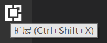
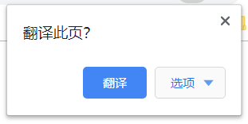

在介绍JavaScript语法前，我们需要知道，学习语法必须要多利用手敲代码来巩固记忆。因此，由于JavaScript的特性，它不能像C++和Java一样独立地编译及运行，我们需要在调试运行JavaScript前创建好它的HTML载体。本文主要介绍了使用vs code搭建网页开发环境的一些简单操作、HTML文档模板标签的部分作用和网页开发时的一些注意事项，有基础的同学可以跳过。
事实上，我们可以用任何的文本编辑器来编写代码，甚至是一个记事本。编写JavaScript代码的方式有很多，可以直接在HTML文档中添加<script></script>标签并嵌套JavaScript语句，也可以新建一个.js后缀的文件，并用<script src="(这个js文件的文件名).js"进行引用。在编写多个网页后我们会发现，将内容（HTML）、设计（CSS）和交互（JavaScript）分离是一个思路非常清晰的做法。由于visual studio code对JavaScript以及前端开发的极力支持，本文以visual studio code来举例。我们登陆visual studio code官网（https://code.visualstudio.com/Download）下载安装好了以后，打开vs code，这时我们的编辑器是英文版的，通过选择左侧这个矩形图标的扩展按钮，它是vs code进行众多开发配置的关键，通过安装各类扩展，vs code可以完成许多工作，我们搜索“Chinese”并安装，重启vs code以后就完成了简单的中文版开发环境的搭建。

完成安装后，打开并选定文件目录，新建一个后缀为.html的文件，输入一个英文感叹号“!”，按Tab，vs code就会自动帮你生成一段html模板代码，现在我们来解析一下这段模板每句话的意思：
1 <!DOCTYPE html>
2 <html lang="en">
3 <head>
4 <meta charset="UTF-8">
5 <meta name="viewport" content="width=device-width, initial-scale=1.0">
6 <meta http-equiv="X-UA-Compatible" content="ie=edge">
7 <title>Document</title>
8 </head>
9 <body>
10
11 </body>
12 </html>
首先， <!DOCTYPE html> 表示该文档是一个HTML5文档，相应地，如果你想要创建其他标记语言文档，例如XML1.1、HTML4.01 Strict等等，就要改变这句话里面的“html”为其他内容，可以自行上网查找。
其次，<html></html>标签规定了整一个文档的开始与结束，它有一个lang属性，意思是这个文档内容的语言类型，例如这里的值是“en”，表示是英文的；如果值是“zh-CN”，它表示该文档内容语言是中国大陆的中文。这个属性的作用在于帮助浏览器检测语言类型并且启动翻译操作。例如我在中文操作系统下运行Google Chrome，当检测到我的文档中lang属性的值是en时，浏览器就会在右上角提醒我：
接下来，<head></head>标签中又默认嵌套了<meta><title>等标签。<meta>标签中指定类似浏览器编码、初始化该网页时浏览器的大小、该网页的关键字（这一点主要是针对搜索引擎对你页面信息的爬取效率）等等的属性，这一些内容我们称之为这个网页的元信息（meta的中文翻译就是元，不是人民币的元，是最小单位的概念）。而<title></title>中则可以填入这个页面的标题，我们可以通过标签的名字非常直观地读懂它们的用途。我们编写程序时为变量取名，也要尽量做到见名知意。
最后，<body></body>中嵌套你希望在文本中加入的内容，后续在编写HTML文档时我们会继续介绍。
快捷打开网页的方法：下载“View In Browser”插件，安装，在vs code界面左侧的资源管理器中右键点击我们刚刚创建的HTML文件，选择“View In Browser”，直接在浏览器打开这个HTML文档。
JavaScript调试方法：在网页中点击F12，会弹出浏览器调试窗口，点击“Console（控制台）”，可以看到我们输出的内容或者编写想要添加进去的JavaScript代码，在调试时，我们通常希望输出一个中间值看错误是不是在这里发生，这时候我们一般会用到这些语句： console.log(someElement); 或者 alert(someElement); 通过读这些函数的名字我们就可以猜到它们的作用。
最后的最后，在同目录下新建一个demo.js文件，并在<body>标签的末尾处添加一句：
<script src="./demo.js"></script>
我们就可以将JavaScript代码嵌入到HTML文档中了。如果要添加CSS文件，则在<head>标签中嵌套一句：
<link href="./demo.css">
<script>标签其实也可以写在<head>标签中，只是浏览器会按顺序加载页面，写在<body>末尾意味着浏览器会先把HTML的内容加载好并最先呈现给用户，而最后再加载其他的交互功能，也包括操作DOM的语句。这样就避免了类似
var element = document.getElementById("aElement");
这样的语句获取不到这个元素而不能正常执行。